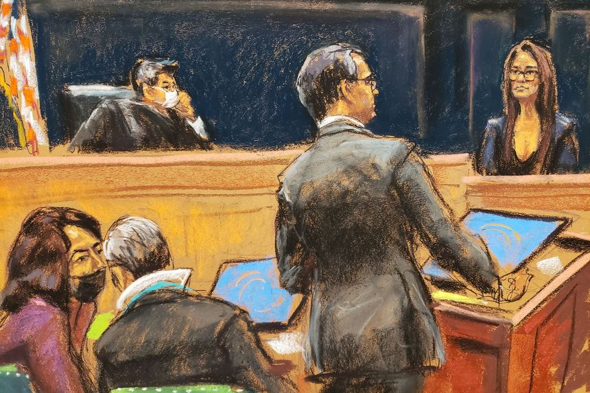

| 时间 | 分类 | 标题 | 副标题 | 正文 | 图片 |
|---|---|---|---|---|---|
| 2021-12-16 18:52:00 | Opinion | Taking Joe Manchin Seriously | Democratic leaders have never believed he meant what he said. | Democrats are getting anxious as 2021 nears its end and President Biden’s $5 trillion spending bill lacks the votes to pass. The target of grumbling from anonymous sources, which may soon become rage, is West Virginia Sen. Joe Manchin, who remains a holdout. But the fault here lies with Democratic leaders who misjudged Mr. Manchin as well as the political and policy moment. Politico reports that some Democrats are pushing Majority Leader Chuck Schumer to bring the climate and social-spending behemoth to the Senate floor, daring Mr. Manchin to kill it. “People have to face the reality of yes or no,” Majority Whip Dick Durbin told Politico, adding Mr. Manchin’s had “more than enough time.” Go ahead, make our day. |
|
| 2021-12-16 18:48:00 | Opinion | Refunding the San Francisco Police | Mayor London Breed undergoes a law-and-order conversion. | As crime has risen, the defund-the-police movement has become a political liability even for Democrats in progressive cities. Exhibit A is San Francisco, where Mayor London Breed appears to have had a law-and-order conversion for the ages. “It’s time that the reign of criminals who are destroying our city—it is time for it to come to an end,” Ms. Breed said Wednesday in a fiery speech that defied her previous tolerance for growing public disorder in her once charming city. “And it comes to an end when we take the steps to be more aggressive with law enforcement, more aggressive with the changes in our policies, and less tolerant of all the bull— that has destroyed our city.” |
|
| 2021-12-16 18:46:00 | Opinion | Jerome Powell, Fiscal Lobbyist | The Fed chairman wants us to forget his role as spending cheerleader. | Jerome Powell doesn’t want to admit that the Federal Reserve has helped to spur the current burst of inflation, which is now three times higher than the Fed’s target. We hope the central bank chairman can explain that one during his confirmation hearing. But even if he thinks today’s inflation has no monetary roots, he shouldn’t be able to get away with his claim that he had nothing to do with the fiscal spending over the last 18 months that boosted excessive demand. That’s what he claimed in his Wednesday press conference when asked about the point. That’s not the Fed’s business, Mr. Powell rightly said. |
|
| 2021-12-16 18:45:00 | Pro Bankruptcy | Judge Overturns $4.5 Billion Settlement Between Purdue Pharma, Sacklers | Judge Colleen McMahon said in a surprising ruling that legal releases central to the settlement are not authorized by the bankruptcy code | A federal judge in Manhattan overturned a roughly $4.5 billion settlement between OxyContin maker Purdue Pharma LP and members of the Sackler family who own the drugmaker, a surprising decision that raises questions about the future of the company and its owners, who have been accused of fueling the nation’s opioid crisis. Judge Colleen McMahon of the Southern District of New York ruled late Thursday that legal releases that would shield members of the Sackler family from civil opioid lawsuits are not permitted under the bankruptcy code. |
|
| 2021-12-16 18:45:00 | Opinion | The Great Central Bank Divide | As inflation goes global, monetary maestros go their separate ways. | Thursday brought significant monetary-policy decisions from the central banks of the United Kingdom and eurozone, a day after the Federal Reserve’s latest pronouncement. One question: Don’t these people talk to each other? This week has seen a widening gap in monetary management in the world’s largest economies, with the potential for trouble down the road. The Bank of England is the most hawkish, increasing its benchmark interest rate to 0.25% from 0.1%. It will maintain at £895 billion ($1.2 trillion) the stock of government and corporate bonds it has bought over the years under quantitative easing, but it had already stopped new purchases last year. Investors had thought (or hoped) the omicron Covid variant might derail the BoE’s plans, but Governor Andrew Bailey thinks inflation is the bigger worry. |
|
| 2021-12-16 18:41:00 | Opinion | Is the U.S. Repeating the Error of the Iraq Withdrawal? | Regional stability declined after the 2011 pullout, and the ‘pivot to Asia’ failed. Sounds awfully familiar. | The humiliating debacle in Afghanistan has many calling for a final U.S. withdrawal from the Middle East. Some are doves who fear another military intervention in the region. Others are hawks who want to shift U.S. attention to China. Both camps misunderstand the Middle East’s regional dynamics and its role in global affairs—the same mistake President Obama made 10 years ago during his “pivot to Asia.” As the last U.S. soldier left Iraq on Dec. 18, 2011, the situation seemed stable. The Obama administration pitched withdrawal as the first step away from America’s long entanglement in the Middle East and toward greater engagement in Asia-Pacific. The idea was that diplomatic initiatives, regional trade deals and repositioned military assets would secure U.S. leadership in the fastest-growing and most dynamic region in the world. |
|
| 2021-12-16 18:40:00 | Opinion | Ethan Crumbley Isn’t an Adult | The prosecution wants to try him as one while also blaming the 15-year-old’s parents. | It’s difficult to summon sympathy for Ethan Crumbley, the high-school sophomore accused of shooting four of his classmates in Michigan. But everyone has an interest in equal justice under the law—a principle violated by a judge’s acquiescence to a prosecutor’s motion that he be charged as an adult. Mr. Crumbley joins tens of thousands of children shunted annually into a criminal-justice system for people over 18. Murdering four people is a horrific act. But it doesn’t transform a 15-year-old into an adult. Americans have gotten tougher and meaner to our kids. Still, we continue to recognize that they’re kids. After 1899, when the first court for juveniles was established in Chicago, a separate legal system for children accused of crimes spread throughout all 50 states. Kids are believed to have less understanding of actions and their consequences; it therefore stands to reason that they should be judged less harshly. Because they are considered more responsive to efforts at reform, punishment is supposed to be set aside in favor of redemption. Research on the “teen brain” that shows that the prefrontal cortex—the part of the brain that governs impulse control, planning and consequences—isn’t fully developed until age 25 provides scientific support for treating younger defendants more leniently than adults. |
|
| 2021-12-16 18:35:00 | Deals | Oracle in Talks to Buy Cerner | An agreement, which could potentially be worth $30 billion, would rank as biggest ever for software giant | Oracle Corp. is in talks to buy electronic-medical-records company Cerner Corp. , according to people familiar with the matter, a deal that could be worth around $30 billion and push the enterprise-software giant further into healthcare. An agreement could be finalized soon, some of the people said, assuming the talks don’t fall apart or drag out. Should a deal come together, it would rank as the biggest ever for Oracle, which has a market value of more than $280 billion. |
 |
| 2021-12-16 18:34:00 | Politics | Democrats Struggle to Find Path Forward on $2 Trillion Plan | Lawmakers no longer expect to complete work on the Build Back Better education, healthcare and climate bill by year-end | WASHINGTON—Democrats attempted to chart a path forward on President Biden’s economic agenda as a series of parliamentary challenges and the concerns of Sen. Joe Manchin (D., W.Va.) stalled progress on a bill the party had hoped to complete this year. Democrats met Thursday afternoon to discuss the roughly $2 trillion education, healthcare and climate package, which senators are no longer expected to take up for a vote this year, according to lawmakers and aides. Lawmakers indicated that the path forward remained unclear as the Senate also sorted through a push on voting-rights legislation and confirming a series of nominees. |
|
| 2021-12-16 18:18:00 | Opinion | COLA Doesn’t Bring Much Refreshment | Automatic wage hikes can’t keep up with inflation. They can only fuel it further. | John Deere agreed to resurrect a 1970s-era benefit in its labor agreement with the United Auto Workers last month. The wages of the company’s union workers will be directly tied to the consumer-price index, and cost-of-living adjustments will help insulate union members from the negative effects of inflation. The rediscovery of these adjustments could be a harbinger. But John Deere uniquely may be able to pass labor cost increases on to its customers. The company boasted it was able to raise prices 8% on large farm equipment during its most recent fiscal year. It isn’t clear whether other industrial companies plan to follow John Deere’s lead, but for those contemplating a similar move, allow me to share a cautionary tale. |
|
| 2021-12-16 18:18:00 | Opinion | Media Companies Still Hoping for ‘Build Back Better’ Windfall | Can’t Pelosi and Schumer say no to anything? | With so many worthy candidates, it’s hard to select the most unproductive and unwise item in the multitrillion-dollar inflation-feeder known as Build Back Better. But in the pending bill’s long list of unnecessary federal expenditures, there’s one provision that seems to sum up the entire bill’s disconnection from the principal issues facing the country. How many voters believe that the problem with our society is that there’s not enough government assistance to the media industry? Unfortunately Speaker of the House Nancy Pelosi (D., Calif.) and Senate Majority Leader Charles Schumer (D., N.Y.) have embraced the ethos of social justice warriors: Leave No Man’s Subsidy Behind. |
|
| 2021-12-16 18:14:00 | Opinion | Wokeness Infiltrates the Salvation Army | It backs away from a call on members to ‘lament, repent and apologize’ for racism. | Although the Salvation Army was founded in London in 1865, it’s in America that its Red Kettles have become a Christmas staple. The Salvationists have earned broad respect in American society after more than a century of charitable giving, but an internal coalition of woke ideologues now endangers the organization’s reputation. This year the Salvation Army’s International Social Justice Commission published a discussion guide called “Let’s Talk About Racism.” The document, its authors say, was “designed to stimulate gracious discussion among Salvationists who choose to participate.” But its radical woke overtones against American Christians seem to make such gracious discussion impossible. |
|
| 2021-12-16 18:13:00 | Books & Arts | ‘The Greatest Show on Earth’ Review: When Pelé Ruled the Pitch | The 1970 World Cup—soccer’s nirvana—is vividly remembered by those who were there. The stars were different then; the signage too. | Since your average professional soccer player is more articulate with his feet than with his tongue, readers could be forgiven for approaching “The Greatest Show on Earth”—an oral history of the 1970 World Cup—with a mild case of the jitters. Platitudes, as much as goals,are the soccer player’s stock in trade. Yet the voices in this charming book—each one an aging football star’s—are eloquent to a man. The book is billed by its subtitle as “the inside story of the legendary 1970 World Cup.” As it happens, the cup was held in Mexico that year—outside Europe or South America for the first time. The author is Andrew Downie, a soccer correspondent for Reuters, but he’s really a curator, gracefully piecing together first-person accounts from players who are still alive and inclined to share their stories. |
|
| 2021-12-16 17:52:00 | Business | Peloton Pulls Chris Noth Ad After Misconduct Accusations Surface | ‘Every single sexual assault accusation must be taken seriously,’ exercise-equipment maker says | Peloton Interactive Inc . has removed a viral ad featuring “Sex and the City” actor Chris Noth after sexual-assault accusations against him were published online. “Every single sexual assault accusation must be taken seriously,” said a Peloton spokeswoman Thursday. “We were unaware of these allegations when we featured Chris Noth in our response to HBO’s reboot. As we seek to learn more, we have stopped promoting this video and archived related social posts.” |
|
| 2021-12-16 17:50:00 | Books & Arts | ‘Spider-Man: No Way Home’ Review: Knotty Web, Big Heart | Heroic charm rescues a messy multiverse plot in the latest Marvel movie | At one point in Marvel’s erratic, unshapely but ultimately endearing “Spider-Man: No Way Home,” Benedict Cumberbatch’s Doctor Strange tells Tom Holland’s Peter Parker that “the multiverse is a concept about which we know frighteningly little.” Maybe so, but that hasn’t stopped filmmakers from flogging the concept for all it’s worth. Multiverse writing means an anything-goes liberation from the grip of logic. Multiverse scripts are this fragmented era’s corrective to the Aristotelian unities of drama. They are festivals of disunity in which time-travel portals connect any universes you choose, and anyone can show up from the past, present or future on a nanosecond’s notice. Given the infinite possibilities for chaos, it’s remarkable that this sequel to “Spider-Man: Homecoming” and “Spider-Man: Far From Home” makes any sense at all. Yet it does, emotionally more than narratively. And—big surprise but not a spoiler—the whole convoluted adventure, directed with jaunty humor by Jon Watts, comes to an extravagant action climax that’s most notable for its kind heart. The story picks up where “Spider-Man: Far From Home” left off. Peter’s identity as Spider-Man has been outed and he is now public enemy No. 1, blamed unjustly for the death of Jake Gyllenhaal’s Beck/Mysterio. This leads Peter; his girlfriend, MJ (sparkling work by Zendaya); and his buddy, Ned (the gentle, slow-spoken Jacob Batalon), to a discussion of celebrity and fake news: “Does any part of you feel relieved by this?” MJ asks him. |
 |
| 2021-12-16 17:49:00 | Books & Arts | ‘Mother/Android’ Review: What to Expect When You’re Expecting During a Robot Uprising | A young couple with a baby on the way tries to flee to safety after androids have gone rogue and decided to wipe out the human race | Is it just the timing of Hulu’s “Mother/Android” that suggests it’s a Christmas story? It is about a young woman in an advanced state of pregnancy making her way through hostile territory so she can give birth in a city that begins with a B. But the city is Boston, not Bethlehem; the woman is of the future, not the past; the antagonists are sentient robots, not Romans; and the upshot is hardly mankind’s salvation. On second thought, the timing is decidedly odd. In the 1974 Mel Brooks classic “Young Frankenstein”—which was, in a far more comical way, also about the pitfalls of creating artificial life and intelligence—Marty Feldman utters the immortal line, “It could be worse. It could be raining.” At which point it rains. There’s a lot of rain in “Mother/Android.” It certainly doesn’t make things better. Could they get worse? Not for Georgia (Chloë Grace Moretz) and her boyfriend, Sam (Algee Smith), who have fled a robot uprising from some unspecified East Coast location and headed north, where boats are rumored to be taking Americans to Korea. (Which one? Who knows? The female official we eventually meet is dressed like a commissar, though.) What incited the nationwide uprising of the androids is unclear, but their new purpose is not: the extinction of the human race. |
|
| 2021-12-16 17:47:00 | Opinion | ‘Flying Over Sunset’ Review: A Trip Worth Taking | James Lapine’s latest imagines the acid-dropping antics of Cary Grant, Aldous Huxley and Clare Boothe Luce. | New York As a boy, I didn’t know what to make of LSD. It was illegal, of course, and Sgt. Joe Friday assured me on “Dragnet” that taking it was the first step down a short road to psychotic hippiedom. Yet the radio was simultaneously full of trippy hit singles like the Byrds’ “Eight Miles High” and the Beatles’ “Lucy in the Sky With Diamonds” that seductively begged to differ. Being the cautious type, I ended up steering clear of the stuff, but I wonder what I’d have done had I known that in 1958, a full decade before possession of LSD was criminalized in the U.S., Cary Grant took it every week under a psychiatrist’s care and thereafter swore by it, claiming that his hundred-odd trips effected a “beneficial cleansing” of his soul. |
|
| 2021-12-16 17:47:00 | Books & Arts | ‘Nightmare Alley’ Review: A Carnival of Malaise | Guillermo del Toro’s latest is visually stunning, but even Bradley Cooper and Cate Blanchett can’t energize the narrative | When Guillermo del Toro’s “The Shape of Water” reached the screen in 2017, we were enchanted by the film’s physical beauty, and its darkly lyrical tale of a lonely woman’s love for a creature that others consider a monster: I described the impact as a flood tide of feelings with a mythic undertow. Now, four years later, Mr. Del Toro has taken a daring and risky turn toward an even darker side with “Nightmare Alley.” (The film is playing exclusively in theaters, as befits a production that can be appreciated fully only on a big screen.) The story starts in the tawdry glitter of traveling carnivals just before World War II. Bradley Cooper plays the hero, Stan Carlisle, a malign drifter turned silver-tongued con man, with an eerie flair that’s matched by the exceptional supporting cast. Once again the images and colors are sumptuous, yet the spectacle as a whole is lifeless, lacking resonance. The director and Kim Morgan adapted the screenplay from a 1946 novel by William Lindsay Gresham. The book previously provided the basis for the 1947 film of the same name, a similarly harsh though slightly more hopeful saga, starring Tyrone Power, that was a box-office failure at the outset but went on to be considered a film-noir classic. Power saw the property as a chance to move beyond romantic roles and stereotyped swashbucklers into serious drama. Mr. Cooper’s career doesn’t need remediation, but Stan, in his hands, is a fascinating apparition who’s on screen for the first 11 minutes of the film before saying a word. (The total running time is a bloated 150 minutes.) |
|
| 2021-12-16 16:52:00 | Politics | Senate Passes Bill Banning Imports From Chinese Region Over Treatment of Uyghurs | President Biden is expected to sign the legislation, which passed the House last week | WASHINGTON—The Senate passed legislation Thursday to ban imports from China’s Xinjiang region over concerns about the use of forced labor, sending the bill to President Biden, who is expected to sign it. The passage, by unanimous consent, comes as Washington cracks down on China for its treatment of the Uyghurs, which lawmakers have said amounts to genocide. The Biden administration also announced sanctions on Thursday that will target Chinese biotech and surveillance companies for their actions in Xinjiang. |
 |
| 2021-12-16 16:46:00 | Business | Bruce Springsteen Sells His Music to Sony Music Group | The Boss unloaded his recorded music and songwriting catalog for over $500 million with some financial backing from Eldridge Industries | ||
| 2021-12-16 16:23:00 | Politics | Biden Administration Pulls Out of Settlement Talks With Separated Families | Justice Department abandons global plan to compensate families separated while illegally crossing border during Trump administration, will litigate claims separately | WASHINGTON—The Biden administration is ending settlement talks that could have led to payments totaling $1 billion to families separated in 2018 under the Trump administration’s zero-tolerance immigration policy. The government will instead begin taking individual cases to trial, litigating lawsuits filed on behalf of hundreds of families seeking monetary damages for the psychological trauma they say the separations caused, according to Lee Gelernt, deputy director of the American Civil Liberties Union’s immigrant-rights project and a negotiator in the talks. The organization had been prepared to continue negotiations when the federal government called them off, he said. |
|
| 2021-12-16 16:21:00 | U.S. | More Than 60,000 Interpreters, Visa Applicants Remain in Afghanistan | About 33,000 of those could be eligible for immediate evacuation, State Department says | WASHINGTON—More than 60,000 Afghan interpreters and others who have applied for asylum in the U.S. after working alongside American forces still remain in Afghanistan, a State Department official said Thursday. About 33,000 Afghans, including principal applicants and their families, have already cleared the more-onerous vetting requirements and could be eligible for immediate evacuation. This is the first time that the State Department has provided a number on those left behind since the Afghanistan government collapsed this summer. |
|
| 2021-12-16 16:14:00 | Opinion | Fewer Criminal Trials? I Plead ‘Not Troubled’ | In most cases, a plea bargain makes the most sense for both sides. | Clark Neily and Somil Trivedi’s op-ed against plea bargaining (“The Unconstitutional Convictions You Don’t Know About,” Dec. 13) suggests the writers are defense-minded people, perhaps unfamiliar with the daily grind of the criminal-justice system. As a state’s attorney during the 1970s, I saw a plea-bargain rate of around 95%. Later, as a judge from 2006 to 2013, I saw, once again, a plea-bargain rate of around 95%. This is fairly consistent across the nation, for obvious reasons. First, lawyers on both sides can, in most cases, calculate to a high degree of accuracy the probability of conviction. Likewise, they can calculate the likely sentence. It’s therefore reasonable to settle the matter with a plea bargain that reflects these two realities. |
|
| 2021-12-16 16:09:00 | Opinion | There’s Much More NATO Can Do to Deter Putin | Germany needs to start leading. The U.S. needs to show Russia an invasion of Ukraine will be costly. | William Schneider Jr. makes excellent recommendations in “Deter Russia by Arming NATO Allies” (op-ed, Dec. 9). I would add that NATO’s European contingent will not be effective until Germany becomes a strong leader, demonstrating support for the alliance by spending an amount commensurate with the power of its economy. Under Angela Merkel, Germany’s support for NATO was limited, and the 2% of GDP military-spending goal was not reached. Ms. Merkel placed trade and investments over security. Vladimir Putin understood she would criticize his provocation but never push sanctions or restrictions that would adversely affect the German economy. Deterring Russia starts with a stronger German investment in NATO. |
|
| 2021-12-16 16:03:00 | Opinion | Rushing a Last Will and Testament Can Cost You | Oversimplification can lead to waste, with assets going to attorneys, legal-filing fees and other expenses that are avoided with a proper plan. | Regarding “Millennials Are Writing Wills Amid Covid Fears” (Personal Journal, Dec. 7): The oversimplification of “you need a will” can lead to waste, with assets going to attorneys, legal-filing fees and other expenses that are avoided with a proper plan. In New York and California, simply having a will is insufficient. In California, if the deceased has only a will and has more than $166,000 in assets (outside of certain asset classes), then you are required to go to probate court. If you have real estate, you almost always must go unless you have a trust (or if the real estate is worth $50,000 or less). |
|
| 2021-12-16 15:56:00 | Business | CDC Advisers Recommend Pfizer, Moderna Covid-19 Vaccines Over J&J’s | Rate of cases of rare blood-clotting condition associated with Johnson & Johnson’s shot is higher than initially thought | U.S. vaccine advisers recommended adults take a Covid-19 vaccine from Pfizer Inc. or Moderna Inc. over Johnson & Johnson ’s after health authorities said the rate of a rare but serious blood-clotting condition was higher than previously detected. The Advisory Committee on Immunization Practices voted 15 to 0 to make the recommendation Thursday after hearing updates from Centers for Disease Control and Prevention officials on reports of J&J vaccine recipients experiencing blood clots combined with low blood-platelet levels. |
|
| 2021-12-16 15:35:00 | U.S. | Ghislaine Maxwell’s Defense Team Begins Its Case | Former assistant to Maxwell testifies and memory expert explains how people can create false memories | The defense began presenting its case Thursday in the sex-trafficking trial of Ghislaine Maxwell, as her lawyers sought to undermine the accounts of accusers who testified the British socialite facilitated disgraced financier Jeffrey Epstein’s alleged sexual abuse. Cimberly Espinosa, a former executive assistant to Ms. Maxwell, told the jury that while working in Epstein’s office she met the accuser identified as Jane, who earlier in the trial told the jury that Epstein began abusing her at age 14. She said Jane’s mother, who came to the office, identified Jane as the financier’s goddaughter. |
 |
| 2021-12-16 15:29:00 | Politics | U.S. Military Hasn’t Yet Granted Any Religious Exemptions to Covid-19 Vaccine Mandate | With more than 95% members partially or fully vaccinated, U.S. military branches outstrip overall U.S. population, Pentagon data show | WASHINGTON—The U.S. military services have yet to grant any religious exemptions to the Pentagon’s Covid-19 vaccinate mandate, out of at least 12,000 requests from service members, the services said. In all, 1,746 soldiers, 2,751 sailors, 4,756 airmen and 3,144 Marines have asked for religious exemption, according to the latest data released by the services. The service branches haven’t reviewed all the requests, and may yet grant some. |
|
| 2021-12-16 15:28:00 | U.S. | Biden Administration Probes ‘Buy Now, Pay Later’ Firms Used by Holiday Shoppers | Consumer bureau seeks information on fast-growing installment-plan companies popular with online merchants | WASHINGTON—Just in time for the holiday season: a regulatory inquiry into “buy now, pay later” installment plans that are frequently offered to online shoppers. The Consumer Financial Protection Bureau on Thursday said it launched an inquiry into such plans offered by Afterpay Ltd. , Affirm Holdings Inc., Klarna Bank AB and other firms. It is the first regulatory action focused on the companies. |
|
| 2021-12-16 15:08:00 | National Security | Navy Won’t Close Hawaii Jet-Fuel Facility That Leaked into Locals’ Drinking Water | Task force of government officials to seek other ways to address causes of contamination that has displaced 3,000 people | WASHINGTON—A U.S. Navy committee tasked with addressing a leak of jet fuel from a World War II-era storage facility that contaminated the water supply on a base in Hawaii won’t consider closing the site, a Navy official said. Navy Secretary Carlos Del Toro established a task force on Dec. 8 consisting of officials from across the government to fix the causes of the leak and ensure clean drinking water and safe operations at Red Hill Bulk Fuel Storage Facility on Hawaii’s Oahu island near Honolulu, according to a memo viewed by The Wall Street Journal. |
|
| 2021-12-16 15:07:00 | World | Haitian Kidnappers Release Remaining 12 Missionary Hostages | Christian missionary group and Haitian police say that the hostages were released and are safe | Haitian kidnappers released the remaining 12 missionary hostages who were abducted two months ago, the U.S. missionary group and a Haitian police spokesman said on Thursday. “We glorify God for answered prayer—the remaining 12 hostages are FREE!,” the Ohio-based Christian Aid Ministries said in a statement posted on its website. “All 17 of our loved ones are now safe.” |
|
| 2021-12-16 15:00:00 | Tech | Facebook, Other Researchers Step Up Fight Against Cyberspying For Hire | Meta Platforms says groups used Facebook, Instagram, WhatsApp to exploit vulnerabilities | Big tech companies are escalating their fight against spies for hire. On Thursday, Meta Platforms Inc. said it removed about 1,500 accounts from Facebook and Instagram that it linked to groups it called “cyber mercenaries” that hack and spy for profit. Facebook researchers tied the accounts to seven entities around the world that appear to sell their services to government and private clients. |
|
| 2021-12-16 14:35:00 | Politics | How Mark Meadows Ended Up in the Middle of the Fight Over Jan. 6 | Text messages of former White House chief of staff take center stage in House probe of pro-Trump Capitol riot | WASHINGTON—Mark Meadows emerged as a central figure in a congressional probe into the Jan. 6 assault on the U.S. Capitol after he turned over texts and emails that contained details on then-President Trump’s effort to overturn the election result—and that showed Mr. Meadows was on the receiving end of a barrage of messages and calls from allies trying to halt the pro-Trump riot. The House this week voted to hold Mr. Meadows in contempt of Congress after he declined to comply with a subpoena to testify in front of the panel investigating the riot. Now, the Justice Department must decide whether it will bring charges against him. |
|
| 2021-12-16 14:30:00 | Latin America | Mexico Says Planned U.S. Tax Breaks for Electric Vehicles Risk Fueling Migration | Proposed tax breaks threaten Mexican jobs and risk affecting migration cooperation, says Mexican Economy Minister Tatiana Clouthier | MEXICO CITY—A U.S. proposal to give tax credits to Americans who buy U.S.-built electric vehicles threatens to hurt Mexico’s industry and spur illegal migration to the U.S., Mexican Economy Minister Tatiana Clouthier said Thursday. She suggested the proposal could jeopardize bilateral cooperation in controlling the flow of migration. |
|
| 2021-12-16 14:21:00 | Tech | U.S. Blacklists Dozens of Chinese Entities Over Surveillance, Military Work | The targets will be restricted from accessing U.S. investment and technology for their alleged support of China’s surveillance of mainly Muslim ethnic groups | WASHINGTON—The Biden administration added dozens of Chinese companies and research institutes to blacklists restricting access to U.S. investment and technology for their alleged support for China’s military and the mass surveillance of mainly Muslim ethnic groups. The Commerce and Treasury departments targeted an array of Chinese businesses, from a company that lays undersea fiber-optic cables to developers of facial-recognition technology to the world’s largest commercial drone-maker, DJI Technology Co. The Commerce action also took aim at China’s Academy of Military Medical Sciences and a complex of research institutes under its control. |
|
| 2021-12-16 13:53:00 | World | Haiti Kidnapping: What Happened to the U.S. Missionaries and When Were They Released? | After two months of being held hostage, missionaries are released unharmed by a gang | A group of mostly American missionaries kidnapped two months ago in Haiti have all been released unharmed. Two were freed on Nov. 21, three more on Dec. 6 and the remaining 12 on Dec. 16. A Haitian gang kidnapped the group in broad daylight near the capital of Port-au-Prince on Oct. 16 and threatened to kill them if ransom wasn’t paid. The group of 16 Americans and one Canadian included seven women and five children, and belongs to Ohio-based Christian Aid Ministries, a charity set up by Amish and Mennonites. |
|
| 2021-12-16 13:45:00 | Markets | Risk for Markets Isn’t Higher Interest Rates, but Lower Employment Goals | Tightening monetary policy despite the Omicron variant could be a sign that central banks are lowering the bar of what full employment means | ||
| 2021-12-16 13:13:00 | Politics | Kamala Harris Says She and Biden Haven’t Discussed Running for Re-Election in 2024 | ‘I don’t think about it, nor have we talked about it,’ she said in an interview, noting it’s their first year in office amid a pandemic | Vice President Kamala Harris said that she and President Biden have never discussed whether he plans to run for re-election and that it isn’t a topic she thinks about as they near the end of their first year in office. Ms. Harris, the nation’s first female vice president, has been in the national spotlight as a potential future leader of the Democratic Party, particularly since she took office as Mr. Biden’s second in command. |
|
| 2021-12-16 12:19:00 | World | Dominican Republic Plane Crash Kills Nine | Puerto Rican music producer José Ángel Hernández, known as ‘Flow La Movie,’ is among the dead | SANTO DOMINGO, Dominican Republic—A small plane attempting to land minutes after beginning a flight to Florida crashed in the Dominican Republic on Wednesday, killing all nine people aboard, including Puerto Rican music producer José Ángel Hernández, the aircraft’s operating company reported. Helidosa Aviation Group said on its Twitter account that the Gulfstream jet was carrying two crew members and seven passengers. |
|
| 2021-12-16 12:16:00 | Opinion | America’s Future Depends on the Blockchain | The U.S. needs to act fast to preserve its advantage in the ‘tokenization’ of our financial infrastructure. | Bitcoin and other novel “tokenized” assets—so called because ownership is documented as a unique digital token on a ledger such as blockchain—recently reached more than $3 trillion in total value. The race is now on to tokenize all types of assets. Embodying ownership, rights and obligations in blockchain-based tokens is in many ways superior to our legacy financial infrastructure. Tens of billions of dollars of tokenized assets change hands daily on markets that operate seamlessly around the clock. The nascent cryptocurrency market is the tip of the financial-information technology iceberg. Below the water’s surface lie vast, interconnected payment networks and credit and securities markets that exceed hundreds of trillions of dollars in asset value. We all use these markets and depend on them, but they are ripe for functional change. |
|
| 2021-12-16 12:07:00 | Markets | U.S. Economy Gets Some Out-of-Season Cheer | Manufacturing and housing starts defied their typical November slowdown | ||
| 2021-12-16 12:03:00 | Tech | Sidewalk Labs CEO Daniel Doctoroff to Step Down Because of Likely ALS | Former deputy mayor of New York City says he plans to raise more money for disease research | Daniel Doctoroff, chief executive of Alphabet Inc.’s Sidewalk Labs, said he will step down from his role at the company because he likely has amyotrophic lateral sclerosis, known as Lou Gehrig’s disease. Mr. Doctoroff, 63 years old, said he plans to spend more time with his family. The former deputy mayor of New York City also said he would focus on raising more money for research into the neurodegenerative disease, which usually causes death within two to five years, though some live longer. |
|
| 2021-12-16 11:58:00 | Life & Work | When Black Performers Starred in Soundies | A forgotten film technology from the 1940s offered artists a way to reach audiences on their own terms, free from Hollywood’s constraints. | In April 2015, a video titled “102 y/o Dancer Sees Herself on Film for the First Time” was uploaded on YouTube. Shot on cellphones in a Brooklyn nursing home, the seven-minute video shows Alice Barker, a Harlem nightclub dancer of the 1930s and 1940s, watching herself perform in vintage film clips. Old and young, Barker is entrancing—vivacious in her nursing-home bed, lissome and flirtatious on film. The video went viral immediately, and it has since been viewed more than 35 million times. Whether they knew it or not, those millions of viewers had also discovered Soundies. A now-obscure film phenomenon of the 1940s, Soundies were three-minute films made to be shown on movie jukeboxes known as Panorams—free-standing, closed-system projection cabinets a little taller than a modern refrigerator. Located in bars, cafes, bus and train stations—the same kinds of places a music-only jukebox might be found—Panorams cost a dime per Soundie. The screen was roughly 17 inches high by 22 inches wide, big enough for a dozen or more viewers to watch together. |
|
| 2021-12-16 11:54:00 | U.S. | Executions in 2021 Dropped to Lowest Level in Three Decades | Decline follows a decadeslong trend but was likely exacerbated by a massive court backlog due to Covid-19 | Executions in the U.S. dropped to their lowest level in more than three decades in 2021, as the death penalty continued its yearslong decline in both liberal and conservative swaths of the country. Five states and the federal government have carried out 11 executions so far this year, down from 17 in 2020, according to a report released Thursday by the Death Penalty Information Center, a nonprofit that studies the death penalty and is critical of how it is administered. Eighteen new people were sentenced to death, matching last year’s distinction as the fewest number of death sentences since 1972. |
|
| 2021-12-16 11:19:00 | World | Omicron Spread Prompts France to Ban Most Travel From U.K | Britons barred from business or tourist trips to France from Saturday | PARIS—France said it would ban most travel from the U.K. starting Saturday, in response to soaring coronavirus infections in Britain fueled by the highly contagious Omicron variant. French authorities said U.K. residents would no longer be allowed to travel to France for business or tourism. The new measures make exceptions for those who have a compelling reason to travel, such as to receive medical care or for the death of a family member and for French citizens to return to France. |
|
| 2021-12-16 10:42:00 | World | EU Leaders to Warn Russia to Stay Out of Ukraine | Ukraine’s president implores Europeans not to wait for hostilities, urging bloc to specify possible deterrence measures | BRUSSELS—European Union leaders are set to warn Russia on Thursday that it would pay a high cost for carrying out a fresh military intervention in Ukraine, but they will likely sidestep a call from Ukraine’s president to detail the actions they would take to deter the Kremlin. EU leaders gathered in Brussels discussed the situation on Ukraine’s border on Thursday afternoon after NATO Secretary-General Jens Stoltenberg earlier urged Russia to reverse a buildup of troops, artillery, tanks and drones close to Ukraine that “undermines security in Europe.” |
|
| 2021-12-16 10:36:00 | U.S. | In a Texas Border Town, Armed Groups Arrive to Look for Migrants | State law that allows migrants to be arrested for trespassing draws armed citizens, in some cases welcomed by county officials | BRACKETTVILLE, Texas—As this South Texas border county has seen a jump in illegal border crossings, Sheriff Brad Coe is cooperating with groups of armed private citizens to help patrol the border and arrest migrants for trespassing. The Kinney County sheriff has been in regular contact for months with a group of men donning body armor and rifles while patrolling to look for migrants. Another armed group offered use of a high-tech drone, and went on a patrol along with the sheriff. It has also pursued potential partnerships with private security firms. |
|
| 2021-12-16 10:07:00 | Markets | YOLO Bets, Deconstructed | If you really believe an investment like bitcoin or AMC is headed for the moon, then the rational move might be to own less of it | ||
| 2021-12-16 10:03:00 | Life & Work | How One Essential Wine Guide Has Stood the Test of Time | Updated annually since its 1977 debut—and now in its 45th edition—‘Hugh Johnson’s Pocket Wine Book‘ continues to provide a unique perspective and authoritative information. Its creator reflects on the classic with characteristic wit. | YOU MIGHT SAY Hugh Johnson is to wine books as Apple is to iPhones: Both produce annual updates to something that’s pocket-size. But Mr. Johnson, with 44 pocket wine books to his name, holds a significant numerical edge. Published in October, “Hugh Johnson’s Pocket Wine Book 2022” is the 45th and latest edition, and also the first where he relinquishes the author credit: This time it goes to Margaret Rand, his longtime editor. Mr. Johnson’s name is still on the cover, too, since—as he put it—“Hugh Johnson” is no longer merely an author but also a brand. With almost 12 million pocket wine guides sold to date, the characterization seems apt. |
|
| 2021-12-16 10:00:00 | World | Value Investor Made Merrill Lynch a Force in Fund Management | Arthur Zeikel, who has died at age 89, stood by long-term fundamentals and was immune to dot-com mania | As a student at City College of New York in the early 1950s, Arthur Zeikel had little ambition and no sense of what he might do with his life. Then an inspiring professor introduced him to economics and markets. Mr. Zeikel discovered he was smarter than he thought and went on to earn an M.B.A. degree at New York University and establish a reputation as a bright young Wall Street fund manager. Merrill Lynch hired him in 1976 and put him in charge of its tiny asset-management arm. |
|
| 2021-12-16 09:58:00 | Life & Work | The False Allure of Managed Trade | With China disrupting global markets, the U.S. is trying to limit certain imports to protect American industry. It’s a strategy that backfired in the past. | In 2018, President Donald Trump imposed tariffs on almost all aluminum and steel imported into the U.S., whether it came from allies, such as the EU, or competitors, such as China. Taken aback, the EU retaliated with tariffs on Harley-Davidson motorcycles, Kentucky bourbon and other U.S. exports. A trans-Atlantic rift had opened, and officials in Brussels rejected any possibility of repairing it with a “managed trade” agreement, in which governments agree on tariff-free trade in certain goods up to a specified level, after which tariffs kick in. Accepting such a deal on metals might help some European exporters, but it would undermine the principles of free trade embodied in the rules of the World Trade Organization. In October, however, the EU reversed course. Under a new managed trade agreement, the EU can export 4.4 million metric tons of steel, for example, to the U.S. duty-free in 2022. Exports beyond that amount will be subject to tariffs at the same rate as under Trump. The EU agreed to the deal in part because Canada and Mexico, which had once stood with Europe on the issue, had already accepted a similar arrangement, and their steel exports to the U.S. were back to pre-Trump levels. The EU had been left standing alone. |
|
| 2021-12-16 09:34:00 | World | Nintendo Engineer, Under the Gun, Devised Hit Game Console | Masayuki Uemura, who has died at 78, worked with Ricoh to supply chip that jolted ‘Super Mario Bros’ to life | ||
| 2021-12-16 08:36:00 | Tech | TikTok to Adjust Its Algorithm to Avoid Negative Reinforcement | The app says it is working to diversify the content it pushes to individual users in order to protect their mental well-being | Popular video-sharing app TikTok said it would adjust its recommendation algorithm to avoid showing users too much of the same content, as social-media platforms globally come under scrutiny for their potential harm to younger users. TikTok said on Thursday that it is testing ways to avoid pushing too much content from a certain topic, such as extreme dieting, sadness or breakups, to individual users to protect their mental well-being. |
|
| 2021-12-16 08:35:00 | Economy | ECB Extends Bond Purchases as It Phases Out Pandemic Stimulus | Policy announcement underscores the European Central Bank’s divergent approach from that of the Federal Reserve | ||
| 2021-12-16 08:30:00 | Asia | U.S. Faces Pressure to Sanction Myanmar’s Lucrative Energy Industry | The oil-and-gas industry is the main source of revenue for the military, which seized power in a coup earlier this year | Almost a year after Myanmar’s military seized power, the U.S. and other Western nations have levied several rounds of sanctions against the country, but they have yet to target the oil-and-gas industry, the junta’s main financial artery. As Myanmar’s military escalates its war on opponents, the U.S. and other countries are facing growing pressure from lawmakers and human-rights advocates to take action against an industry that generates billions of dollars in revenue each year, and is the country’s largest single source of foreign cash. |
|
| 2021-12-16 08:22:00 | Markets | Plug Power, Rivian, Roblox, Adobe: What to Watch When the Stock Market Opens Today | Plug Power entered a partnership to develop a hydrogen fuel cell-powered electric city bus; Earnings are due from EV maker Rivian | Futures are up, putting Wall Street on course to extend gains that followed the Federal Reserve’s move to speed up its plans to tighten policy. Here’s what we’re watching in Thursday’s trading: Write to James Willhite at james.willhite@wsj.com |
|
| 2021-12-16 08:05:00 | Business | McDonald’s Settles Lawsuit With Former CEO | Company says deal claws back severance valued at more than $105 million, includes apology from Steve Easterbrook | Former McDonald’s Corp. Chief Executive Steve Easterbrook agreed to return compensation now valued at more than $105 million to resolve a legal dispute related to his dismissal as head of the burger chain, the company said Thursday. The settlement, which allows McDonald’s to move past a scandal that has weighed on it for more than two years, also includes an apology from Mr. Easterbrook. |
|
| 2021-12-16 08:00:00 | Business | Bud Light to Launch Hard Soda | Brewers and soda companies are creating drinks on each other’s turf in search of growth | The line between beer and soda is blurring. Anheuser-Busch InBev SA said it is introducing in January a line of Bud Light-branded hard soda in cola, cherry cola, orange and lemon-lime flavors. |
|
| 2021-12-16 08:00:00 | Life & Work | The First Rule of Pandemic Travel Is Read Everything About Local Laws—Twice | A wide variety of rules on vaccines, masks and testing creates extra stress and confusion for travelers | Anyone hoping to comply with the latest Covid-related travel restrictions should start by assuming they are nothing like the ones in the city, state or country next door to their destination. Countries have been swift to impose new travel restrictions due to concerns about the Omicron variant. Each destination sets its own requirements, and the rules are far from consistent, which can cause extra stress and confusion for travelers. |
|
| 2021-12-16 07:55:00 | Business | Lord Rothermere to Take Daily Mail Publisher Private | Move will further consolidate U.K. newspaper landscape among a few tycoons | The great grandson of the Daily Mail’s founder has succeeded in his bid to take the owner of the British tabloid newspaper private, resolving a monthslong tussle. The Rothermere family investment vehicle said Thursday it had secured enough support from Daily Mail & General Trust PLC shareholders to remove the media company from the stock market after an almost 90-year run. |
|
| 2021-12-16 07:54:00 | World | Bank of England Raises Interest Rates to Battle Inflation | Move comes a day after the U.S. Federal Reserve set the stage for a series of rate rises in 2022 | LONDON—The Bank of England raised its benchmark interest rate to tame accelerating inflation, the first rate increase by a major central bank since the pandemic began. Officials on the U.K. central bank’s Monetary Policy Committee voted eight to one to lift the BOE’s policy rate to 0.25% from a record low of 0.1%, saying the strength of the labor market meant higher borrowing costs were appropriate to keep a lid on price growth. |
|
| 2021-12-16 07:50:00 | CIO Journal | Xerox to Announce Multiyear Cloud Deal With Oracle | Xerox will use Oracle’s cloud-computing infrastructure and software as a digital backbone for a swathe of ventures being developed in its business incubator | ||
| 2021-12-16 07:42:00 | Markets | H&R Block Sues Block, Formerly Square, for Trademark Infringement | Square changed name to Block earlier this month, a nod to CEO Jack Dorsey’s blockchain ambitions | H&R Block Inc. is suing Block Inc., the financial-technology company formerly known as Square Inc., for trademark infringement. The tax-prep company believes Block’s recent name change will confuse customers and harm its brand. It wants Block to stop using the name and a logo it sees as “nearly identical” to its own, according to a complaint filed in federal court Thursday. (H&R Block’s logo is a green square; Block’s Cash App sports a green square with rounded corners and a white dollar sign). |
|
| 2021-12-16 07:30:00 | CFO Journal | Ford CFO John Lawler Draws on His Operations Experience | The finance chief says his long tenure at the auto maker is an advantage as he works to transform the company | ||
| 2021-12-16 07:11:00 | Tech | Hong Kong Tech Conference Postponed as Pandemic Restrictions Isolate Business Hub | Dublin-based organizer cites uncertainties due to the pandemic for pushing event back to 2023 | HONG KONG—Organizers of a prominent international technology conference are postponing a gathering in Hong Kong that was set for March, the latest disruption from the Covid-19 pandemic to the city’s role as a global business hub. An executive for the Dublin-based company that was organizing the annual RISE Conference said to a participant in an email, which was reviewed by The Wall Street Journal, that uncertainties due to the pandemic have continued, and after much consideration organizers had decided to postpone it until March 2023. A company spokeswoman confirmed the news. |
|
| 2021-12-16 07:00:00 | U.S. | New York Businesses Weigh Mask, Vaccine Policies Under New State Rule | Gov. Kathy Hochul’s order requires employees, patrons to either be vaccinated or wear masks indoors as Covid-19 cases rise | ||
| 2021-12-16 07:00:00 | CMO Today | Rokt Raises $325 Million as It Preps for Planned IPO | The e-commerce marketing technology company said the funding round, led by Tiger Global Management, values the company at $1.95 billion | ||
| 2021-12-16 06:22:00 | Markets | U.K. Fines GAM, Fund Manager Who Invested in Greensill Loans | Case was a harbinger for the problems Greensill would later cause, including its own collapse and the freezing of $10 billion worth of Credit Suisse investment funds | LONDON—The U.K.’s Financial Conduct Authority fined Swiss asset manager GAM Holding AG and one of its former star bond-fund managers for conflicts of interests, resolving a longstanding case related to the company’s investments in loans generated by the now-defunct Greensill Capital. GAM will pay £9.1 million, equivalent to about $12 million, to settle the matter. Tim Haywood, the former fund manager, will pay £230,037. GAM and Mr. Haywood agreed to accept the regulator’s conclusions, which found the company had failed to ensure its systems adequately controlled conflicts of interest related to three investments. Mr. Haywood was fined separately for violating his company’s gifts and entertainment policy. |
|
| 2021-12-16 06:03:00 | World | Highly Vaccinated South Korea Can’t Slow Down Covid-19 | More than 80% of the country has received two doses, but officials are now reinstituting restrictions they had vowed to relax | SEOUL—South Korea had successfully contained Covid-19 throughout much of the pandemic, and it now has one of the highest vaccination rates among wealthy countries. But historic levels of infections, hospitalizations and deaths are prompting the country to reverse plans to reopen and instead take some of the most aggressive measures against the virus of any country in the world. |
|
| 2021-12-16 05:52:00 | Economy | Covid-19 Surge Slows European Recovery, but Supply Problems Ease | Rapid spread of Omicron variant hit British service providers hard, while Delta had a similar impact in Germany | ||
| 2021-12-16 05:32:00 | Markets | Investors Bargain Hunt in Evergrande Bonds Amid Default | While bond funds expect a long, complicated restructuring, some say the property developer’s debt is a buy at 20 cents on the dollar | Some money managers purchased bonds of China Evergrande Group in recent weeks as the property developer toppled into default and prices hit record lows. Fund managers are betting creditors will recover far more than the debt’s current prices suggest, despite the likelihood of a complex restructuring. The real-estate company has $20 billion of international bonds outstanding, making it one of the world’s largest distressed-debt investments at the same time low interest rates have investors looking for ways to boost returns. |
|
| 2021-12-16 05:30:00 | Derby’s Take: Powell Says Markets in Good Shape Ahead of Busy 2022 | ‘I’m not troubled by where the long bond is,’ Fed chairman says | As the Federal Reserve moves toward seismic monetary policy changes next year, Chairman Jerome Powell appears to believe financial markets are in a good place to navigate what is very likely coming their way. Mr. Powell, speaking to reporters after this year’s final gathering of the Federal Open Market Committee, said the financial sector appears to be in solid shape. Broadly... |
||
| 2021-12-16 05:30:00 | Business | The Elizabeth Holmes Trial: Closing Arguments Begin | Prosecutors and defense lawyers will give final pitches as Theranos founder fights 11 charges of conspiracy and fraud | SAN JOSE, Calif.—Closing arguments begin Thursday in Elizabeth Holmes’s criminal-fraud trial, marking the final opportunity for prosecutors and defense lawyers to sway jurors to their side of the case. Ms. Holmes, the founder of now-defunct blood-testing startup Theranos Inc., is fighting 11 charges of conspiracy and fraud claiming that she lied to investors and patients about the company’s technology. The 2018 indictment alleges that Ms. Holmes inflated revenue projections, lied about Theranos’s relationship with the military and falsely touted the ability of Theranos devices to test for some 200 health conditions using just a few drops of blood from a finger prick. |
|
| 2021-12-16 05:30:00 | Economy | Dashing Fed’s Hopes, Low Unemployment Becomes an Inflation Threat | With millions of workers missing from the labor market, vacancies and workers mismatched and demand still strong, the Fed now worries about a wage-price spiral | The lesson the Federal Reserve drew from the pre-pandemic economy was that unemployment could run at historic lows without fueling inflation. It’s why the central bank last year promised to never again raise interest rates just because the job market was strong. That assumption is turning out to be wrong and the Fed thus finds itself in a situation it hoped to never face: preparing to raise interest rates to slow the economy though the labor market remains far from where it was two years ago. |
|
| 2021-12-16 05:30:00 | Economy | Jobless Claims Likely Remained Near Decades Low, Economists Say | America’s employers are trying to hold on to their workers, facing a tight labor market as millions quit their jobs | New applications for unemployment benefits likely edged higher last week but stayed very low, reflecting an unusually tight labor market as the economy continued to recover. Economists surveyed by The Wall Street Journal estimated that initial jobless claims, a proxy for layoffs, inched up to 195,000 for the week that ended Dec. 11 from 184,000—the lowest level in 52 years—the week before. Some economists attributed that half-century low to seasonal adjustments being thrown off because of the Covid-19 pandemic. Still, new jobless claims have been steadily declining throughout the year. |
|
| 2021-12-16 05:30:00 | Markets | How Banks Win When Interest Rates Rise | Banks are hungry for higher rates, which let them charge more on loans. But don’t expect deposit rates to budge. | Banks yearning for interest rates to rise appear on the verge of getting their wish. Federal Reserve officials on Wednesday signaled they were prepared to raise interest rates at least three times next year in response to rising inflation, a faster timeline than was expected a few months ago. |
|
| 2021-12-16 05:21:00 | Tech | Netflix Slashes India Prices in Battle with Amazon, Disney | Global streaming giant cuts monthly subscriptions to as low as $1.95 a month in quest for new users | Netflix Inc. is slashing its prices in India, a key market for global growth where it trails cheaper rival streaming services from Amazon . com Inc. and Walt Disney Co. The Los Gatos, Calif., company this week said in a blog post from India executive Monika Shergill that it is cutting its basic plan in India by 60% to 199 rupees, equivalent to $2.61, a month. Netflix also lowered prices on its least expensive plan, which offers mobile-only viewing, to $1.95 monthly. Its most expensive plan has been cut to $8.51. |
|
| 2021-12-16 05:03:00 | Markets | Stocks Set to Extend Gains Ahead of More Central Bank Decisions | European and Asian shares rally after the Federal Reserve shifts toward tightening monetary policy | Stocks were poised to extend gains ahead of policy decisions by the European Central Bank and Bank of England, which follow the Federal Reserve’s pivot toward higher interest rates. Futures for the S&P 500 rose 0.5% Thursday, a day after the broad stocks gauge closed at its second-highest level on record. Contracts for the Dow Jones Industrial Average added 0.4% and Nasdaq-100 futures climbed 0.6%, pointing to a strong start to the session for technology stocks. |
|
| 2021-12-16 05:00:00 | Politics | White House Revs Up Trucker Recruitment Drive | The plans aims to address longstanding industry issues but isn’t likely to have an immediate impact on supply-chain bottlenecks | The Biden administration unveiled a plan aimed at boosting the number of commercial truck drivers as part of a broader push to unclog supply-chain bottlenecks. Administration officials on Thursday said the plan aims to get more drivers on the road in the coming months by making it easier and faster for them to get certified and by jump-starting or expanding apprenticeship programs through carriers and other employers with trucking fleets. Overland Park, Kan.-based trucker Yellow Corp. and grocery chain Albertsons Cos. are among the companies that have committed to such programs. |
|
| 2021-12-16 05:00:00 | Politics | U.S. Seeks to Replace Every Lead Water Pipe in the Country Within a Decade | White House to announce plan including new EPA rules, funded by $15 billion from the recently passed infrastructure bill | WASHINGTON—The Biden administration intends to announce a plan to replace every lead water pipeline in the country within a decade, leaning on $15 billion recently approved by Congress and forthcoming new rules from the Environmental Protection Agency. White House officials said they are rolling out a new plan aimed at helping about 10 million U.S. households replace lead water pipes. Both President Biden and Democratic lawmakers in Congress have promised swift action on the issue, as lead pipes are considered a health hazard by the EPA. |
|
| 2021-12-16 05:00:00 | Deals | Waste and Recycling Platform Rubicon Going Public in $2 Billion SPAC Merger | Investors in software company include actor Leonardo DiCaprio, KKR co-founder Henry Kravis and billionaire investor Paul Tudor Jones | Waste and recycling platform Rubicon Technologies LLC is merging with a special-purpose acquisition company to go public at a valuation of roughly $2 billion, the companies said. Rubicon, backed by a high-profile roster including actor Leonardo DiCaprio, is combining with the technology-focused Founder SPAC in a deal that is expected to be unveiled Thursday. |
|
| 2021-12-16 05:00:00 | CFO Journal | Former Danone CEO to Run International Climate-Disclosure Rule Maker | Emmanuel Faber is set to become chair of the International Sustainability Standards Board in January | ||
| 2021-12-16 04:18:00 | Markets | Turkey’s Currency Crisis Escalates Ahead of Possible Rate Cut | Lira’s downward trajectory against the dollar intensified, triggered by Turkish president’s demands to slash rates | Turkey’s currency crisis deepened in the lead-up to a central bank meeting Thursday, when officials might bow to pressure to resume interest-rate cuts despite soaring inflation. Previous rate cuts demanded by Turkish President Recep Tayyip Erdogan have triggered a collapse in the Turkish lira in recent months. The currency has lost 40% of its value against the dollar since September, making it one of the worst performing investments in the world. |
|
| 2021-12-16 02:10:00 | CMO Today | United Talent Agency Acquires MediaLink for $125 Million | The Hollywood talent firm is buying the influential media consulting company as UTA seeks to grow its burgeoning marketing practice | ||
| 2021-12-15 22:23:00 | Markets | Reddit Files Confidentially for IPO | Social media company says in blog post it has begun process to go public | Reddit Inc. said it has confidentially filed paperwork with the U.S. Securities and Exchange Commission for an initial public offering, adding to a banner year for stock-market debuts. The company said in a blog post that it had started the paperwork with the SEC but didn’t share any further details. |
|
| 2021-12-15 19:01:00 | Opinion | Hawkish Fed Talk, Dovish Action | The central bank signals negative real interest rates throughout 2022. | The Federal Reserve has retired the word “transitory” and now admits that inflation is high, but it isn’t in any rush to do much about it. That was the message Wednesday from the Federal Open Market Committee (FOMC) and Chairman Jerome Powell, whose actions said inflation really is transitory, even if it’s now impolitic for them to say so. As a rhetorical matter, the FOMC statement shifted notably from its long-time wording and chucked its language that it would aim to have inflation run well above its 2% target. Mr. Powell waxed enthusiastic about the “rapidly” improving labor market and the economy—”really strong,” “consumer demand is very strong,” “incomes are very strong.” In that limited sense at least, he was mugged by economic reality. |
|
| 2021-12-15 18:59:00 | Opinion | The Xi-Putin Entente Rises | Both share a goal of undermining the U.S.-led global order. | The gushing remarks at Wednesday’s video meeting between Russian President Vladimir Putin and Chinese President Xi Jinping have drawn renewed attention to an underplayed story: The tightening strategic embrace between America’s two most formidable geopolitical competitors. Moscow and Beijing have held each other at arm’s length for decades, but as the world becomes less stable, both see regional advantages from rolling back American power and prosperity. “China-Russia relations have emerged from all kinds of tests to demonstrate new vitality,” said the Chinese Foreign Ministryaccount of the discussion. It added that “Russia will be the most staunch supporter of the Chinese government’s legitimate position on Taiwan-related issues.” In his introductory remarks, Mr. Putin hailed “a new model of cooperation” between the two countries. He will travel to Beijing and meet Mr. Xi in person early next year. |
|
| 2021-12-15 18:55:00 | Opinion | Biden Raises the Ethanol Gas Tax | Higher renewable fuel mandates may put refiners out of business. | President Biden last week celebrated a small decline in gasoline prices. Meantime, his Environmental Protection Agency proposed changes to the renewable fuel standard—aka the ethanol mandate—that will raise them. The 2007 Energy Independence and Security Act requires gasoline sold in the U.S. to contain increasing volumes of renewable fuel. EPA assigns refiners and importers annual quotas they must blend into gasoline or diesel. Those that don’t meet their quotas must buy credits from others to comply. |
 |
| 2021-12-15 18:44:00 | Opinion | The Chinese Economy’s Tough Transition | Slowing growth isn’t helping Xi Jinping’s political designs. | No one said China’s economic pivot from real estate would be easy, and now along come more data to prove the point. It’s clearer by the day that China’s economy is under growing pressure, which means so is President Xi Jinping. A range of numbers released Wednesday paint a gloomy picture. Growth in retail sales slowed to 3.9% year-on-year in November, down from 4.9% in October. Growth in fixed-asset investment was 5.2% for the January-November period, compared to 6.1% for January-October, implying a slowing pace during the most recent month. |
|
| 2021-12-15 18:30:00 | Opinion | A Hostile Takeover of the FDIC | Board members had always respected the agency’s independence—until now. | The Federal Deposit Insurance Corporation is led by a five-member board, which for decades has delegated day-to-day operations to its chairman, who by statute serves a five-year term. This structure was designed to ensure independence from changing political administrations and has led to a long legacy of collegiality. For 88 years the chairman has controlled the board agenda and worked collaboratively with other board members. That all changed on Oct. 31, when board member Rohit Chopra presented me with a draft request for information on bank mergers. Two-and-a-half weeks earlier, Mr. Chopra had been sworn in as director of the Consumer Finance Protection Bureau, a position entitling him to a seat on the FDIC board. |
|
| 2021-12-15 18:29:00 | Opinion | Jen Psaki Tries to ‘Fake’ Out the CBO’s Build Back Better Score | She says it didn’t evaluate the ‘actual bill,’ but the legislation is meant to deceive. | Desperate to pass yet another gargantuan spending bill, President Biden has declared war on a federal agency Vice President Biden regularly praised—the Congressional Budget Office. In 2010, Mr. Biden described the CBO’s estimates as “the gold standard” and said of the office that “no Republican or Democrat questions it.” Later in his vice presidency he declared that the agency is “widely respected on both sides of the aisle.” |
|
| 2021-12-15 18:29:00 | Opinion | John Kerry’s Financial Crusade Against Oil and Gas | Public officials have told the climate envoy to stop trying to raise energy costs for U.S. consumers. | ‘The reality is the Biden administration is not standing in the way of increasing domestic oil production to meet today’s energy needs,” Deputy Energy Secretary David Turk asserted at the World Petroleum Congress in Houston last week. Really? He might want to check with John Kerry. The president’s climate envoy has been pressuring banks and financial institutions to reduce their commitments to U.S. oil and gas companies and join the Net-Zero Banking Alliance, which would hobble the ability of oil and gas companies to increase production. Citi, Wells Fargo, Bank of America, Morgan Stanley, Goldman Sachs and JPMorgan Chase signed on to the alliance this year. |
|
| 2021-12-15 18:23:00 | Opinion | The Midwest’s Tornadoes Predate Global Warming | Activists who insist on a relationship between climate change and twisters can’t explain the deadly storms of yesteryear. | Activists wasted no time attributing last week’s tragic tornado outbreak in the Midwest to climate change. My hometown in southwest Indiana would like a word. Princeton, Ind., was the final community struck by the terrible 1925 Tri-State tornado outbreak—still the nation’s worst—that killed nearly 700 people and injured thousands more across Missouri, Illinois and Indiana. When I was in high school 50 years later, people still talked about this extreme weather outbreak. I had friends whose families lost people. Older folks who remembered the tornado’s ferocity would scan the skies with a special concern as storm season began every spring. |
|
| 2021-12-15 18:20:00 | Opinion | An Obituary Is the Story Of a Life, Not a Death | That’s what I learned from writing the ‘In Memoriam’ column. | I didn’t set out to write obituaries. I suppose no one does. A couple of years ago, I began editing the quarterly magazine of an academic honor society. One of my duties involved writing death notices of deceased members. The prospect of writing about death seemed daunting, especially as a pandemic spread across the globe. Amid so many headlines about loss, I didn’t relish the thought of sitting at a keyboard and focusing on the departed. |
|
| 2021-12-15 18:15:00 | Opinion | Blame Voters for the Rising Crime Rate | Just maybe, voters are starting to regret the consequences of electing progressives. | For the stressed-out voters in your political life, an aphorism to print and wrap in ribbon for Christmas giving is “Live and learn.” Though in these crime-sodden times, it might need revision: “Die and learn.” Some 30 major cities across the U.S. are recording record or near-record homicides this year, as Rafael Mangual of the Manhattan Institute noted in these pages recently. |
|
| 2021-12-15 18:13:00 | Logistics Report | Container Imports Tumble at Los Angeles, Long Beach Ports | Last month’s surprise decline in inbound volumes seemed to reflect an increased number of smaller ships arriving at the ports, even as the line for entry to the major U.S. gateway complex grows | ||
| 2021-12-15 18:11:00 | Tech | Apple Delays Return to Office, Closes Three Retail Stores as Covid Cases Rise | The iPhone maker has delayed its return-to-office plan several times | Apple Inc. has once again delayed its plans to return to the office as concerns mount about the Omicron variant of the virus that causes Covid-19, and the company also closed three retail locations after a rise in cases at those stores. On Wednesday, Apple told its office workers that their return is again delayed to a yet-to-be-determined date, according to a person familiar with the announcement. Roughly a month ago, Chief Executive Officer Tim Cook told employees they would return in a hybrid approach in February. |
|
| 2021-12-15 18:11:00 | Books & Arts | ‘Tinderbox’ Review: Remaking a Medium | On its 50th anniversary, an oral history of HBO, from creative brainstorms and fearless innovation to executive tantrums, backstabbing and worse. | Nestled in my bookshelves is an early edition of “An Encyclopedia of World History,” Harvard professor William Langer’s dense tome covering ancient, medieval and modern times in 1,243 pages. Now it’s challenged for heft by James Andrew Miller’s latest book, which takes only a couple of hundred fewer pages to recount the five-decade oral history of . . . Home Box Office! Yes, HBO—the pay-TV service that, since its debut on Nov. 8, 1972, has given us “The Sopranos,” “Sex and the City,” “The Larry Sanders Show,” “Curb Your Enthusiasm,” “The Wire,” “Game of Thrones,” “Band of Brothers” and “From the Earth to the Moon”; Muhammad Ali’s epic “Rumble in the Jungle” and “Thrilla in Manila” fights; a Barbra Streisand concert from her Malibu backyard; comedy specials by every standup star from George Carlin to Chris Rock, compelling documentaries, original movies and much, much more. |
|
| 2021-12-15 17:23:00 | Books & Arts | Alvin Ailey Springs Back Into Live Performance | The Troupe’s current run at City Center includes two live premieres and four newly staged productions. | New York The Alvin Ailey American Dance Theater’s current run at City Center (through Sunday) has been billed as a homecoming by the troupe in light of the Covid-19-prompted cancellation of last year’s December season. This stint is pared back to three weeks of programs from four. |
|
| 2021-12-15 17:19:00 | Books & Arts | ‘Revealing Krishna: Journey to Cambodia’s Sacred Mountain’ Review: Pivoting Our View of a Sculpture | Research and collaboration have reconfigured a work from around the year 600, transforming its presence. | Cleveland Shifting a statue’s torso less than 20 degrees may not seem a big deal, but, oh, the difference it has made in a portrayal of Krishna at age 8. Made around the year 600 in Phnom Da, southern Cambodia, the life-size figure has been on display at the Cleveland Museum of Art since its 1973 acquisition. It dates from the earliest phase of Khmer stone sculpture when artists began combining imported Indian styles with a predilection for large figures in the round and features that foreshadow those of later Angkor sculptures. The museum first displayed this masterpiece as a head and torso. Then, after a 1978-79 conservation, Krishna acquired legs reconstructed from fragments also found in Phnom Da. Facing forward, the figure stood before us, beautiful and benevolent, but somewhat bland. |